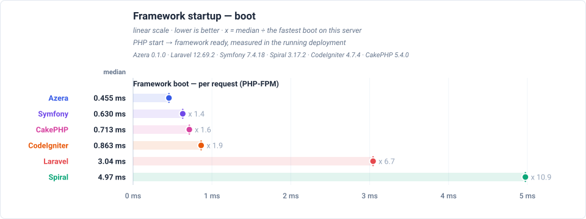
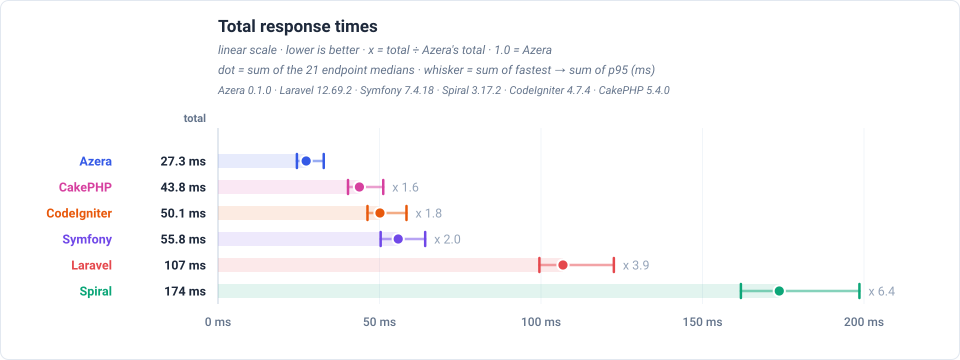
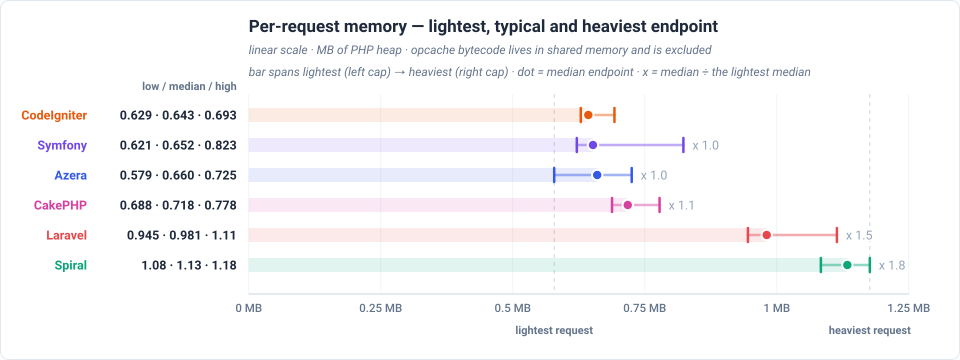
Feature benchmarks
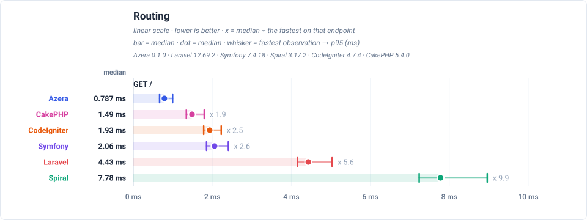
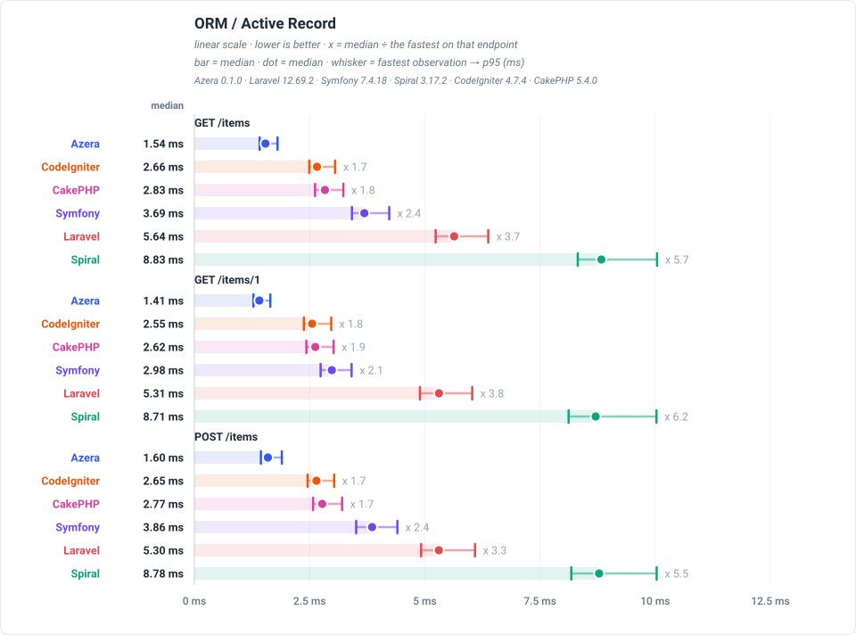
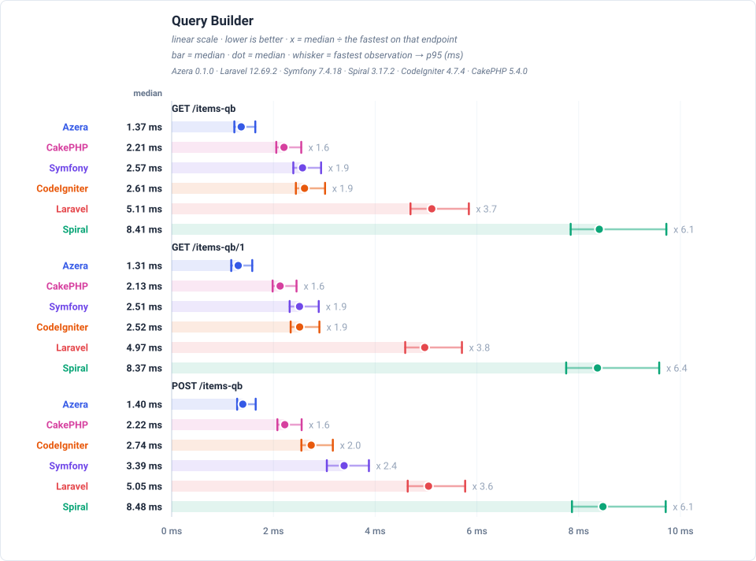
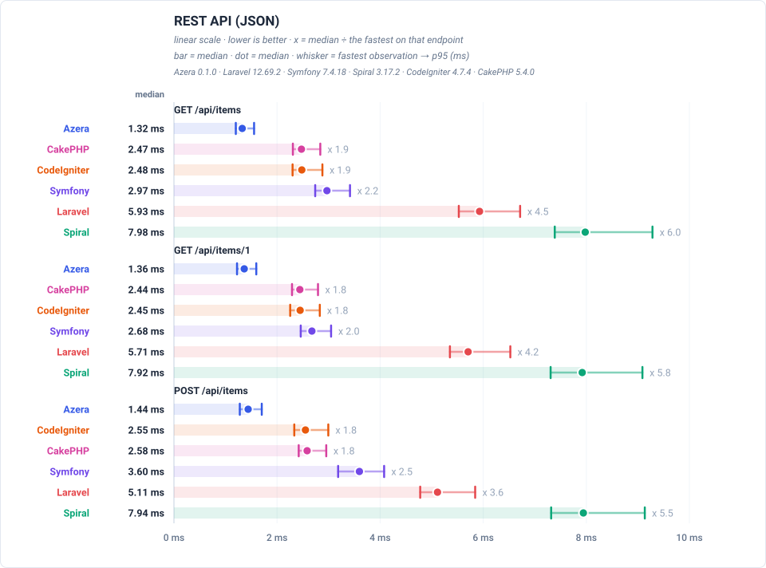
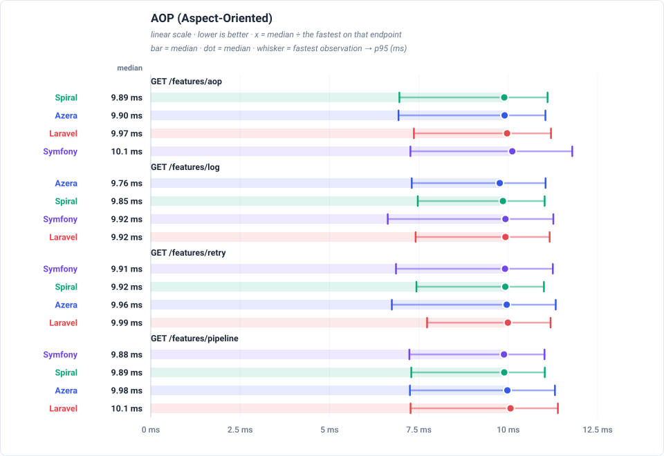
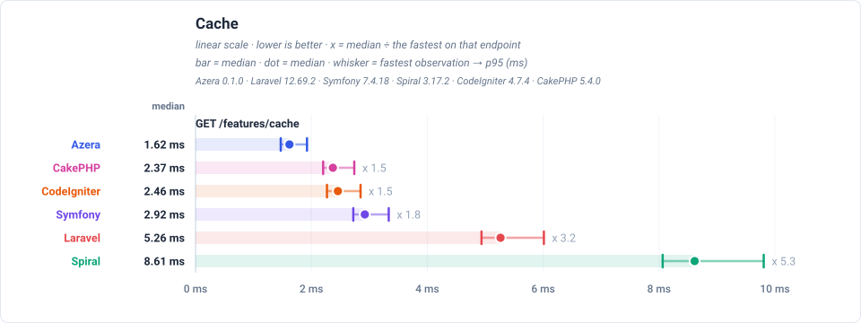
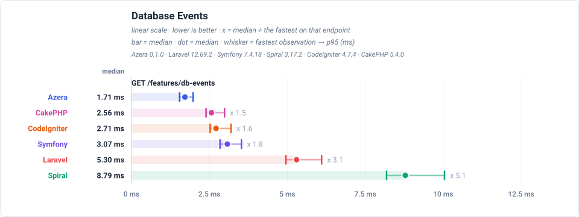
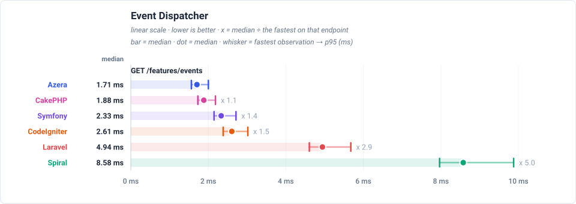
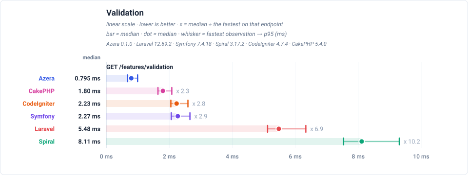
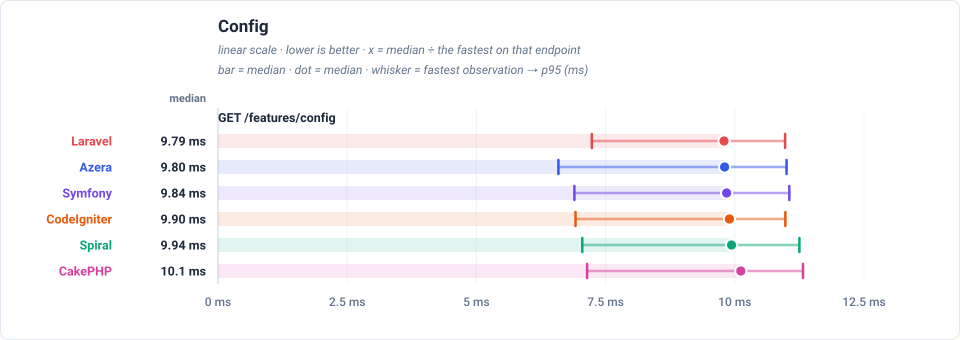
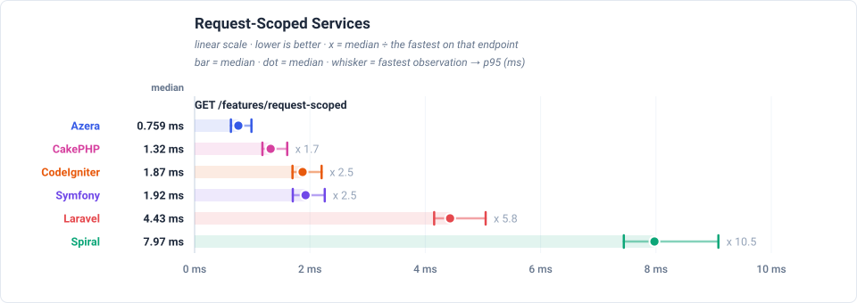
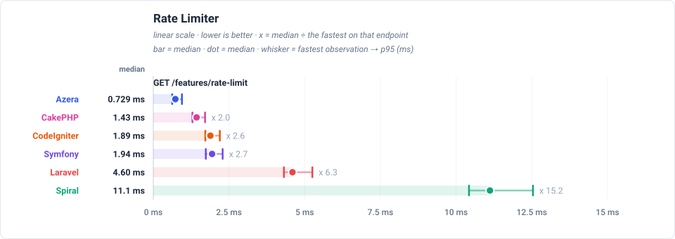
Latency by endpoint (ms, trimmed mean — lower is better)
| Request | Workload | Azera | Laravel | Symfony | Spiral | CodeIgniter | CakePHP |
|---|---|---|---|---|---|---|---|
GET / | no DB — routing + template only | 0.782 | 4.50 | 2.05 | 11.2 | 1.95 | 1.48 |
GET /items | 20 of 1000 items (page 1, + COUNT) | 1.53 | 5.73 | 3.74 | 12.4 | 2.69 | 2.83 |
GET /items/1 | 1 item by id | 1.40 | 5.38 | 3.00 | 12.3 | 2.57 | 2.62 |
POST /items | 1 row upserted (sentinel #999999) | 1.58 | 5.41 | 3.90 | 12.3 | 2.68 | 2.80 |
GET /items-qb | 20 of 1000 items (page 1, + COUNT) | 1.36 | 5.22 | 2.62 | 11.7 | 2.66 | 2.26 |
GET /items-qb/1 | 1 item by id | 1.30 | 5.07 | 2.57 | 11.6 | 2.56 | 2.17 |
POST /items-qb | 1 row upserted (sentinel #999997) | 1.41 | 5.14 | 3.45 | 11.8 | 2.81 | 2.26 |
GET /api/items | 20 of 1000 items as JSON | 1.32 | 6.04 | 3.03 | 11.2 | 2.54 | 2.52 |
GET /api/items/1 | 1 item by id as JSON | 1.35 | 5.82 | 2.72 | 11.0 | 2.49 | 2.49 |
POST /api/items | 1 row upserted (sentinel #999998) | 1.43 | 5.21 | 3.65 | 11.2 | 2.62 | 2.66 |
GET /features/aop | no DB — interceptor pipeline | 2.77 | 5.99 | 3.26 | 12.7 | — | — |
GET /features/cache | COUNT(*) of 1000 rows, cached 10s (miss = query) | 1.65 | 5.32 | 2.95 | 11.9 | 2.48 | 2.39 |
GET /features/log | no DB — buffered log handlers | 1.21 | 4.47 | 1.93 | 11.2 | — | — |
GET /features/retry | no DB — retry policy | 1.21 | 4.50 | 1.96 | 11.2 | — | — |
GET /features/pipeline | no DB — middleware pipeline | 0.788 | 4.51 | 1.95 | 11.3 | — | — |
GET /features/db-events | 1 event row INSERTed per request | 1.74 | 5.36 | 3.14 | 12.1 | 2.75 | 2.59 |
GET /features/events | no DB — in-process listeners | 1.69 | 5.06 | 2.38 | 11.9 | 2.67 | 1.92 |
GET /features/validation | no DB — validator run | 0.766 | 5.58 | 2.31 | 11.3 | 2.28 | 1.83 |
GET /features/config | no DB — config lookup | 0.731 | 4.52 | 1.93 | 11.2 | 1.94 | 1.38 |
GET /features/request-scoped | no DB — scoped service resolve | 0.749 | 4.50 | 1.96 | 11.2 | 1.91 | 1.35 |
GET /features/rate-limit | no DB — cache-backed limiter | 0.753 | 4.68 | 1.98 | 11.3 | 1.92 | 1.47 |
Server floor — real nginx + PHP-FPM with pm.max_requests=0: the pool never recycles its worker, so no process is spawned per request — what remains is the FastCGI handshake plus a minimal script. A hello-world endpoint that boots nothing but PHP (floor-php) and a static file through nginx (floor-http) measure exactly that cost — the floor every row stands on. Subtracting that floor leaves the framework's own per-request boot, which FPM still pays for every request even though its worker survives.